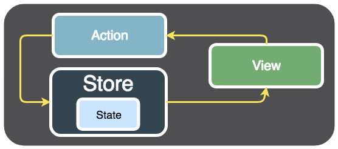
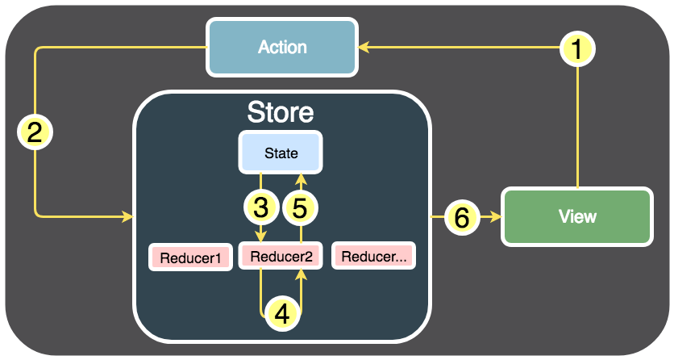

Un reducer est une fonction créée dans le store. Cette fonction a pour rôle de modifier le state de votre application en fonction d'une action reçue. Ce n'est donc pas le store qui modifie directement le state de votre application, mais un reducer contenu dans le store.

Construction d'une action Une action est, tout simplement, un objet avec deux paramètres :
function monReducer (state, action) {
let nextState
switch(action.type) {
case 'ACTION_1':
// Modification du state de l'application
return nextState
case 'ACTION_2':
// Modification du state de l'application
return nextState
//...
default:
return state
}
}
Le state doit toujours rester immuable (cf. documentation).
Pour modifier un objet immuable, il faut créer une copie de cet objet (donc créer un nouvel objet) et y appliquer vos modifications.
// Ici, on a créé un nouvel objet nextState dans lequel on a copié le state de l'application ...state
// Respect du principe d'immuabilité
let nextState
nextState = {
...state,
profil: action.value
}
// Store/Reducers/favoriteReducer.js
const initialState = { favoritesFilm: [] }
function toggleFavorite(state, action) {
let nextState
switch (action.type) {
case 'TOGGLE_FAVORITE':
default:
return state
}
}
Définir la fonction TOGGLE_FAVORITE pour ajouter ou supprimer un favori
// Store/Reducers/favoriteReducer.js
const initialState = { favoritesFilm: [] }
function toggleFavorite(state = initialState, action) {
let nextState
switch (action.type) {
case 'TOGGLE_FAVORITE':
const favoriteFilmIndex = state.favoritesFilm.findIndex(item => item.id === action.value.id)
if (favoriteFilmIndex !== -1) {
// Le film est déjà dans les favoris, on le supprime de la liste
nextState = {
...state,
favoritesFilm: state.favoritesFilm.filter( (item, index) => index !== favoriteFilmIndex)
}
}
else {
// Le film n'est pas dans les films favoris, on l'ajoute à la liste
nextState = {
...state,
favoritesFilm: [...state.favoritesFilm, action.value]
}
}
// renvoie l'objet nextState si celui-ci n'est pas undefined, sinon on renvoie l'objet state
return nextState || state
default:
return state
}
}
export default toggleFavorite
Création du Store
// Store/configureStore.js
import { createStore } from 'redux';
import toggleFavorite from './Reducers/favoriteReducer'
export default createStore(toggleFavorite)
Utilisation du Store via le Provider Le Provider met le store à disposition dans toute l'application
// App.js
import React from 'react'
import Navigation from './Navigation/Navigation'
import { Provider } from 'react-redux'
import Store from './Store/configureStore'
export default class App extends React.Component {
render() {
return (
<Provider store={Store}>
<Navigation/>
</Provider>
)
}
}
Maintenant il faut connecter le Component au Store
// Components/FilmDetail.js
//...
import { connect } from 'react-redux'
//...
export default connect()(FilmDetail)
Voir la documentation mapStateToProps
Si on spécifie mapStateToProps dans la fonction connect , automatiquement, le component est abonné aux changements du store Redux.
// Components/FilmDetail.js
//...
const mapStateToProps = (state) => {
return {
favoritesFilm: state.favoritesFilm
}
}
export default connect(mapStateToProps)(FilmDetail)
À présent, dans les props du component FilmDetail, vous avez accès au state de l'application et donc aux films favoris. Vérifoez avec les logs :
// Components/FilmDetail.js
class FilmDetail extends React.Component {
//...
render() {
console.log(this.props) /* "favoritesFilm": Array [] */
return (
//...
)
}
}
Lorsque vous allez ajouter un film aux favoris, le state de votre application va être mis à jour. Le store Redux va détecter ce changement et notifier tous les components connectés à votre store Redux, vous savez, tous les components que l'on a connectés grâce à la définition du paramètre mapStateToProps.
Components/FilmDetail.js
_toggleFavorite() {
// Action Redux
const action = { type: "TOGGLE_FAVORITE", value: this.state.film }
// Envoi de l'action au Store Redux
this.props.dispatch(action)
}
_displayFilm() {
// ...
<Button title="Favoris" onPress={() => this._toggleFavorite()}/>
Vérification de l'événement componentDidUpdate
componentDidUpdate() {
console.log("componentDidUpdate : ")
console.log(this.props.favoritesFilm)
}
FilmDetail.js complet
// Components/FilmDetail.js
import React from 'react'
import { StyleSheet, View, Text, ActivityIndicator, ScrollView, Image, Button } from 'react-native'
import { getFilmDetailFromApi, getImageFromApi } from '../API/TMDBApi'
import moment from 'moment'
import numeral from 'numeral'
import { connect } from 'react-redux'
class FilmDetail extends React.Component {
constructor(props) {
super(props)
this.state = {
film: undefined,
isLoading: true
}
}
componentDidMount() {
getFilmDetailFromApi(this.props.navigation.state.params.idFilm).then(data => {
this.setState({
film: data,
isLoading: false
})
})
}
componentDidUpdate() {
console.log("componentDidUpdate : ")
console.log(this.props.favoritesFilm)
}
_displayLoading() {
if (this.state.isLoading) {
return (
<View style={styles.loading_container}>
<ActivityIndicator size='large' />
</View>
)
}
}
_toggleFavorite() {
const action = { type: "TOGGLE_FAVORITE", value: this.state.film }
this.props.dispatch(action)
}
_displayFilm() {
const { film } = this.state
if (film != undefined) {
return (
<ScrollView style={styles.scrollview_container}>
<Image
style={styles.image}
source={{uri: getImageFromApi(film.backdrop_path)}}
/>
<Text style={styles.title_text}>{film.title}</Text>
<Button title="Favoris" onPress={() => this._toggleFavorite()}/>
<Text style={styles.description_text}>{film.overview}</Text>
<Text style={styles.default_text}>Sorti le {moment(new Date(film.release_date)).format('DD/MM/YYYY')}</Text>
<Text style={styles.default_text}>Note : {film.vote_average} / 10</Text>
<Text style={styles.default_text}>Nombre de votes : {film.vote_count}</Text>
<Text style={styles.default_text}>Budget : {numeral(film.budget).format('0,0[.]00 $')}</Text>
<Text style={styles.default_text}>Genre(s) : {film.genres.map(function(genre){
return genre.name;
}).join(" / ")}
</Text>
<Text style={styles.default_text}>Companie(s) : {film.production_companies.map(function(company){
return company.name;
}).join(" / ")}
</Text>
</ScrollView>
)
}
}
render() {
return (
<View style={styles.main_container}>
{this._displayLoading()}
{this._displayFilm()}
</View>
)
}
}
const styles = StyleSheet.create({
main_container: {
flex: 1
},
loading_container: {
position: 'absolute',
left: 0,
right: 0,
top: 0,
bottom: 0,
alignItems: 'center',
justifyContent: 'center'
},
scrollview_container: {
flex: 1
},
image: {
height: 169,
margin: 5
},
title_text: {
fontWeight: 'bold',
fontSize: 35,
flex: 1,
flexWrap: 'wrap',
marginLeft: 5,
marginRight: 5,
marginTop: 10,
marginBottom: 10,
color: '#000000',
textAlign: 'center'
},
description_text: {
fontStyle: 'italic',
color: '#666666',
margin: 5,
marginBottom: 15
},
default_text: {
marginLeft: 5,
marginRight: 5,
marginTop: 5,
}
})
const mapStateToProps = (state) => {
return {
favoritesFilm: state.favoritesFilm
}
}
export default connect(mapStateToProps)(FilmDetail)
Texte pour activer/décactiver les favoris : ♡ ♥ textFavori = '♡' if (this.props.favoritesFilm.findIndex(item => item.id === this.state.film.id) !== -1) { // Film dans nos favoris textFavori = '♥' } return ( <Button style={styles.favorite_image}
/>
)
favorite_container: { alignItems: 'center', // Alignement des components enfants sur l'axe secondaire, X ici }
Connecter le store Redux au component Search,<br>
ajouter la prop extraData sur la FlatList<>br>
Une FlatList est un [PureComponent](https://reactjs.org/docs/react-api.html#reactpurecomponent)
Pour que la liste ce mettre à jour il faut utiliser l'attibut extraData
<FlatList data={this.state.films} extraData={this.props.favoritesFilm}
<FilmItem
film={item}
isFilmFavorite={(this.props.favoritesFilm.findIndex(film => film.id === item.id) !== -1) ? true : false}
displayDetailForFilm={this._displayDetailForFilm}
/>
// On connecte le store Redux, ainsi que les films favoris du state de notre application, à notre component Search const mapStateToProps = state => { return { favoritesFilm: state.favoritesFilm } }
export default connect(mapStateToProps)(Search)